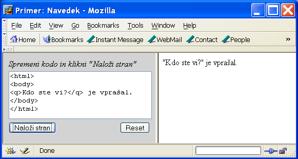

Tisti, ki ste se malo bolj poglobili v primer iz prejšnjega poglavja, ste verjetno opazili, da se brskalnik pretirano ne ozira na obliko besedila v izvorni kodi. Stvari prikaže precej po svoje. Poigrajte se nekoliko s primerom, ki to še bolj nazorno prikazuje. Vidimo, da brskalnik vse besedilo v elementu body prikaže tako, da poljubno število presledkov, tabulatorjev in praznih vrstic prikaže kot en sam presledek, besedilo pa lomi, ko to doseže rob okna.
Popolnega nadzora z jezikom XHTML ni. To dejstvo izvira iz narave Interneta in množice brskalnikov, katerih proizvajalci so si ves čas v laseh in vsak deluje na nekoliko svojstven način. Največ, kar lahko mi, navadni avtorji spletnih strani, naredimo, je to, da se držimo priporočil, ki nam jih ponuja združenje W3C.
Z uporabo t.i. fizičnih elementov sicer lahko do neke mere oblikujemo podobo naše strani, vendar je takšnih elementov malo. Minimalni mednarodno predpisani nabor elementov jezika XHTML celo ne določa nobenega. Razlog je preprost. Dandanašnji je na tržišču vedno več najrazličnejših naprav, ki prikazujejo spletne strani. V skrajnem primeru si lahko zamislimo napravo, ki sploh nima prikazovalnika. Predstavljajte si na primer govorno napravo, ki vsebino spletne strani izgovarja. Kako naj takšna naprava izgovori mastno tiskano besedilo? Kako naj izgovori besedilo zelene barve? V našem učbeniku bomo spoznavali izključno t.i. logične elemente. S temi elementi lahko določamo le pomene delov besedila in ne njihove dejanske oblike. Ta je prepuščena volji brskalnika, ki ga trenutni gledalec naše spletne strani uporablja. Če bomo pri pisanju spletnih strani upoštevali priporočila, bo naš dokument v večini popularnih brskalnikov lepo oblikovan. Za tiste, ki pa bi še vedno radi stvari oblikovali po svoje, so nastali t.i. slogi CSS, ki jih bomo spoznali v poglavju Stilski izziv.
Zdaj pa poglejmo nekaj osnovnih elementov za oblikovanje besedila.
Prelom vrstice (angl. line break) lahko zahtevamo z elementom br. Ta element nikoli nima vsebine, zato ga uvrščamo med prazne elemente. Ker se mora po predpisih tudi prazen element zaključiti, bi element br izgledal takole:
<br></br>
Namesto tega se za prazne elemente uporablja okrajšana oblika, kjer dodamo poševnico kar na konec začetne značke. Priporoča se, da je pred poševnico presledek:
<br />
Drug način preloma besedila dosežemo tako, da postavimo besedilo v odstavke (angl. paragraph). Odstavek je določen z elementom p.
Naš naslednji primer kaže elementa br in p v akciji. Opazimo, da se, ne glede na širino okna brskalnika, besedilo z vsakim novim odstavkom prelomi, kot se prelomi tudi na mestu elementa br. Večina brskalnikov med odstavke vrine celo prazno vrstico.
Element p spada med tako imenovane blokovske elemente (angl. block-level element). Videli bomo, da vsi blokovski elementi pred začetkom in za koncem svoje vsebine povzročijo prelom vrstice. Drug tip elementov so vrstični elementi (angl. inline element), ki večinoma ne prelamljajo besedila. En tak element, ki smo ga že spoznali, je element em. V zvezi z vrstičnimi in blokovskimi elementi velja splošno pravilo, da blokovskih elementov ne smemo vstavljati v vrstične elemente. Tako na primer dveh poudarjenih odstavkov ne smemo zapisati tako, da jih vstavimo v element em, ki je vrstični element:
<em>
<p>Prvi poudarjen odstavek.</p>
<p>Drugi poudarjen odstavek.</p>
</em>
Večina današnjih brskalnikov tak zapis sicer tolerira in ga celo pravilno prikaže, venar takšno gnezdenje elementov ni v skladu s pravili jezika XHTML. Pravilna oblika gornjega zapisa je takšna:
<p><em>Prvi poudarjen odstavek.</em></p> <p><em>Drugi poudarjen odstavek.</em></p>
Vsako spodobno besedilo ima tudi naslov (angl. heading). Jezik XHTML pozna šest različnih nivojev naslovov in podnaslovov, ki jih vstavljamo v elemente od h1 do h6. Mnogo avtorjev te elemente napačno razume kot elemente, ki zgolj naredijo besedilo večje in bolj poudarjeno. Čeprav je optični učinek na besedilo v resnici tak, pa ti elementi poleg tega izražajo tudi logično zgradbo dokumenta. Naslovi se razlikujejo po pomembnosti in tako jih brskalniki tudi prikazujejo. V splošnem je na primer naslov v elementu h1 prikazan večji in bolj poudarjen kot naslov v elementu h2 ali h3, ki je še manjši. Poigrajte se malo s primerom.
Navedek (angl. quotation) je del besedila, ki dobesedno navaja govorjeno ali pisano besedo, običajno kakega drugega avtorja. Jezik XHTML določa dva elementa, ki služita navajanju besedila. Prvi je element q, ki je vrstični element in naj bi postavil navedeno besedilo v navednice, kakor kaže slika 2. Poznal naj bi celo pravila postavljanja navednic znotraj navednic. Vendar starejši in celo nekateri novejši brskalniki, kot na primer Internet Explorer 6.0, ne podpirajo pravilno elementa q. Drugi element, element blockquote, je blokovski element in bo zato povzročil preskok v novo vrstico. Oglejmo si primer.
|  |
| Slika 2: Brskalnik Mozilla ver. 1.7.3 prikaže vsebino elementa q v navednicah. |
Videli smo že, da lahko del besedila poudarimo z elementom em, katerega vsebino večina brskalnikov prikaže v ležečem tisku. Močnejši način poudarjanja dosežemo z elementom strong (angl. močno), kar se v večini brskalnikov pokaže v mastnem tisku. Na primeru vidimo, da je možno elementa gnezditi enega v drugem, kar večinoma povzroči mastnen ležeči tisk.
V dokumentih, ki opisujejo delo z računalniki, pogosto nastopajo ukazi ali kosi programske kode, ki naj jih uporabnik dobesedno vtipka. Da bi se tipkano besedilo ločilo od preostale vsebine, ga pogosto pišemo v drugačni pisavi. Tipkano besedilo vstavimo v element kbd (angl. keyboard = tipkovnica), katerega vsebino večina brskalnikov prikaže v enakomerno razmaknjeni pisavi (angl. monospaced font).
Pri prikazu programske kode je poleg oblike pisave pomembno tudi to, da se ohrani oblika besedila. Dejstvo, da brskalnik zanemari vse večkratne presledke, tabulatorje in prehode v novo vrstico, postane tu precej moteče. Kadar želimo, da se besedilo v brskalniku prikaže oblikovano točno tako, kot smo ga zapisali v izvorni kodi, z vsemi presledki in prelomi, ga postavimo v element pre (angl. preformatted = predoblikovan). Predoblikovanega besedila brskalnik tudi ne bo lomil, če preseže rob okna, ampak bo prikazal pomikalno palico (angl. scrollbar), s katero lahko premikamo vsebino okna, da si ogledamo tudi besedilo, ki je ušlo iz okna.
Tako kot tipkano besedilo, se tudi predoblikovano besedilo v večini brskalnikov prikaže v enakomerno razmaknjeni pisavi. Znotraj elementa pre je dovoljeno uporabiti nekatere preproste elemente za oblikovanje besedila, kot sta na primer em in strong. Tule je primer.
Z elementom var označimo spremenljivko, ki se pojavi v matematičnem izrazu ali programski kodi. Vsebovano besedilo se običajno prikaže v ležečem tisku. Na primer, zapis
Spremenljivki <var>x</var> priredimo vrednost 42
brskalnik prikaže kot
Spremenljivki x priredimo vrednost 42.
Določenih znakov ni na tipkovnici, ali pa imajo v jeziku XHTML poseben pomen. V prejšnjem primeru Kosovelove pesmi smo naleteli na dva takšna znaka: < in ∞, ki smo ju morali zapisati z ustrezno kratico. Spredaj smo postavili znak &, zadaj pa podpičje. Znak < bi se sicer prikazal tudi, če bi ga v besedilu zapisali takšnega kot je, vendar le, dokler se za njim ne pojavi znak >. Takšen par znakov brskalnik tolmači kot značko.
Znakov, ki jih ni na tipkovnici, in jih je možno prikazovati, je ogromno in jih tu ne bomo navajali. Tabele z vsemi znaki bo bralec našel v literaturi. Tukaj naštejmo le posebne znake, ki so rezervirani znaki jezika XHTML in jih brskalnik pogosto ne prikaže dobesedno. Ti znaki so:
| zapis znaka | angl. ime | se prikaže kot |
|---|---|---|
| & | ampersand | & |
| < | lower than | < |
| > | greater than | > |
| " | quotation | " |
| | non-breakable space | nelomljivi presledek |
Poglejmo si še primer.
Brskalniki ob prikazu vsebine elementa body strnejo vsakršno zaporedje presledkov, tabulatorjev in praznih vrstic v en sam presledek. Če želimo obliko besedila ohraniti, ga vstavimo v element pre. Na voljo je tudi precej drugih elementov za oblikovanje besedila, od katerih vrstični elementi večinoma ne vplivajo na prelom besedila, blokovski elementi pa ob svojem začetku in koncu vstavijo prelom vrstice. Za prelom vrstice lahko uporabimo tudi prazen element br.
Prazni elementi nimajo vsebine, vseeno pa morajo biti zaključeni. Namesto z zaključno značko, jih zaključimo tako, da na konec začetne značke dodamo poševnico. Priporoča se, da je pred poševnico presledek.
Rezerviranih in posebnih znakov brskalnik XHTML pogosto ne prikaže. Če želimo, da se ti znaki prikažejo v brskalniku, jih moramo zapisati z ustrezno kodo.
Vsi elementi, ki jih obravnava ta učbenik, so povzeti v tabeli.